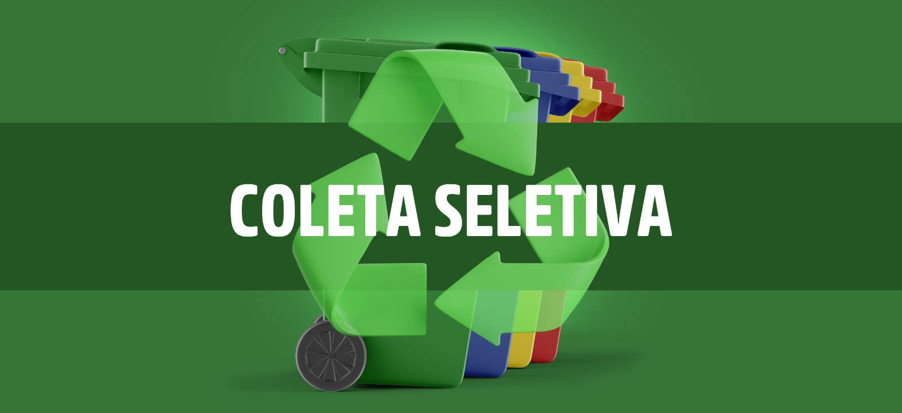
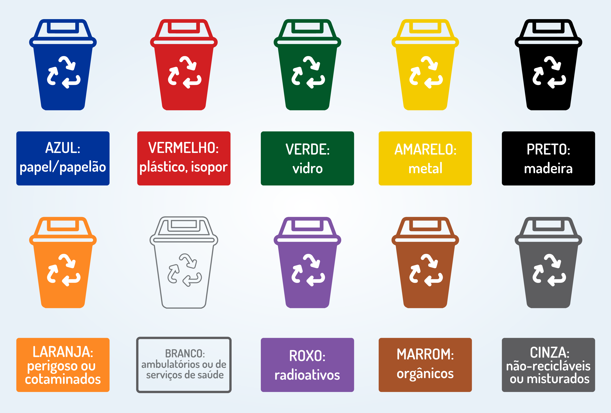

Coleta Seletiva
A coleta seletiva é um processo de separação e recolhimento de resíduos sólidos de acordo
com o tipo de material descartado.
Seu principal objetivo é facilitar a reciclagem, reduzir a quantidade de lixo enviada aos aterros sanitários e diminuir os impactos ambientais causados
pelo descarte inadequado.
Com o aumento da população e do consumo, a produção de lixo também cresce constantemente. Por isso, a coleta seletiva se tornou uma das principais estratégias para promover a sustentabilidade e o uso consciente dos recursos naturais.

Resumo sobre o artigo
- O Que é Coleta Seletiva?
- Quando Começou?
- Cores das Lixeiras da Coleta Seletiva
- Importância da coleta seletiva
- Como praticar a coleta seletiva?
O Que é Coleta Seletiva?
A coleta seletiva consiste na separação dos resíduos em diferentes categorias, como papel, plástico, vidro, metal e lixo orgânico. Essa separação pode ser feita nas casas, escolas, empresas e locais públicos.
Após a separação, os materiais recicláveis são encaminhados para cooperativas, centros de triagem ou indústrias de reciclagem, onde podem ser transformados em novos produtos.
Esse processo ajuda a evitar que materiais recicláveis sejam misturados com resíduos orgânicos ou contaminados, o que dificulta ou até impede a reciclagem.
Quando Começou?
A coleta seletiva começou a surgir em alguns países da Europa e da América do Norte ao longo do século XX, principalmente após os anos 1950, quando aumentaram a produção de lixo e a preocupação ambiental.
No Brasil, as primeiras experiências de coleta seletiva aconteceram na década de 1960, em São Paulo. Depois disso, surgiram iniciativas em Porto Alegre em 1978 e em Niterói e Pindamonhangaba em 1985.
Já os programas mais organizados e permanentes de coleta seletiva começaram a crescer no país a partir do final dos anos 1980 e principalmente nos anos 1990, com a criação de cooperativas de reciclagem e leis ambientais
Cores das Lixeiras da Coleta Seletiva
As lixeiras da coleta seletiva possuem cores específicas para facilitar a identificação dos materiais:

- Azul: papel e papelão
- Vermelho: plástico
- Verde: vidro
- Amarelo: metal
- Marrom: resíduos orgânicos
- Preto: madeira
- Laranja: resíduos perigosos
- Branco: resíduos hospitalares
- Roxo: resíduos radioativos
- Cinza: resíduos não recicláveis
Importância da coleta seletiva
A coleta seletiva é importante porque contribui para a preservação do meio ambiente e para a melhoria da qualidade de vida da população. Entre seus principais benefícios estão:
- Redução da poluição do solo, da água e do ar
- Diminuição da quantidade de lixo nos aterros sanitários
- Economia de recursos naturais
- Redução do desperdício de materiais recicláveis
- Geração de empregos em cooperativas e indústrias de reciclagem
- Incentivo à conscientização ambiental
Além disso, a reciclagem de materiais como alumínio, papel e plástico consome menos energia do que a produção desses materiais a partir de matéria-prima nova.
Importância da coleta seletiva
Para praticar a coleta seletiva no dia a dia, algumas atitudes simples podem ser adotadas:
- Separar o lixo orgânico do lixo reciclável
- Lavar embalagens antes do descarte
- Evitar misturar restos de comida com materiais recicláveis
- Utilizar lixeiras identificadas por cores
- Informar-se sobre os dias de coleta seletiva da cidade
- Levar pilhas, baterias e eletrônicos a pontos de descarte específicos
Essas ações ajudam a tornar o processo de reciclagem mais eficiente.
.jpg)
Deseja testar seu conhecimento? CLIQUE AQUI PARA JOGAR NOSSO JOGO INTERATIVO